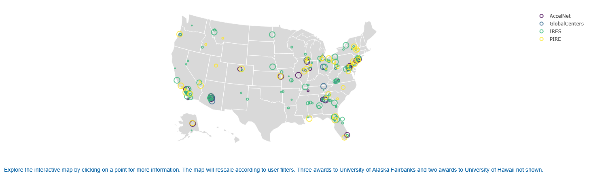
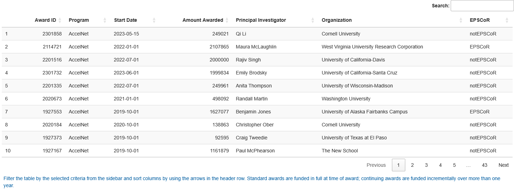

Exploring NSF International Science Investments
Executive Summary
Rationale: The app collates data for NSF’s Office of International Science and Engineering (OISE) historic portfolio across four programs – PIRE, IRES, AccelNet, and Global Centers – that differ substantially in funding scale, award frequency, geographic reach, and eligibility criteria. While PIRE and AccelNet have been archived, Global Centers and IRES are active, with variable due dates.
Approach: I built an interactive R Shiny app using data from the NSF Awards Database to enable dynamic filtering and visualization of OISE awards. The app provides three interactive views – a map, a time series bubble plot of investments, and a time series line chart – as well as a sortable data table. All tabs can be filtered by year, program, and EPSCoR status.
Significance: Making federal science investment patterns explorable and transparent supports evidence-based advocacy, institutional grant strategy, and equity-focused program evaluation. The tool is directly usable by OISE staff, university research offices, and science policy researchers.
Check out the app here: NSF-OISE-AwardBrowser
App Highlights
- OISE program officers and university research development staff can use this tool to identify funding gaps, institutional patterns, and equity trends across the OISE portfolio
- EPSCoR filter surfaces under-investment directly, supporting data-driven arguments for targeted outreach or program redesign
- Geographic distribution of awards shifts across years, reflecting program cycles, new program launches, and institutional competition patterns
- Some institutions receive awards across multiple programs and years, indicating concentration of international research capacity
DISCLAIMER This app was developed independently by Kara C. Hoover and is not affiliated with, endorsed by, or produced on behalf of the National Science Foundation. Data are drawn from the publicly available NSF Awards Database.
Map View
The map uses plotly’s scatter geo to plot award locations by institution. Jitter is applied to reduce point overlap where multiple awards go to the same institution. Points are colored by program and sized proportionally to award amount. Clicking a point returns award ID, program, track, amount, and institution name. The map rescales automatically when filters are applied. Three University of Alaska Fairbanks awards and two University of Hawaii awards are excluded due to geographic rendering constraints.
Figure 1. Geographic distribution of OISE awards by institution location (all years, all programs).

Interpretation: The default map shows broad national coverage concentrated in coastal and Great Lakes research hubs. Filtering by EPSCoR status reveals that the majority of award dollars flow to non-EPSCoR institutions. Filtering by year shows geographic patterns shifting as programs cycle and new programs launch.
Bubble Plot
The scatter plot uses plotly to display individual award amounts in US dollars by end date, colored by program. Point size reflects award amount, making high-value outliers immediately visible. Hovering over a point returns award-level detail. The plot makes program launch years directly readable — no AccelNet points appear before 2019, no Global Centers before 2022 — and PIRE’s periodic funding gaps are visible as breaks in the data.
Figure 2. OISE award amounts in US dollars by program and end date (all years, all programs).

Interpretation: Global Centers and PIRE awards are visually distinct – fewer points, much higher per-award values reaching $5-6M. IRES produces dense clusters of small awards near zero. AccelNet awards (purple) appear only from 2019; Global Centers (blue) only from 2022, directly reflecting program launch dates. PIRE gaps reflect its periodic rather than continuous funding structure.
Line Chart
The line chart uses ggplot2 to show total dollars awarded by program across years. Each program is a separate line, colored consistently with the map and plot. Filtering by program resets the y-axis scale, making within-program trends readable independent of the large PIRE values that dominate the default view.
Figure 3. Total awards by program and year.

Interpretation: PIRE dominates early years with large, volatile annual totals driven by its high per-award values and periodic cycles. IRES funding is consistent but low in absolute dollars. AccelNet and Global Centers ramp up after their respective launch years. Filtering by program resets the scale, making within-program trends easier to read.
Sortable Table
The table uses DT to render a sortable, searchable view of all awards matching the active filters. Users can sort by institution to identify concentration of awards, or by amount to rank awards within a program. Columns include award ID, PI, institution, program, award dates, amount, and EPSCoR status.
Figure 4. Data Table, sortable.

Study Design
Data Source: NSF Public Awards Database, accessed via direct download. Awards data are publicly available and include all active OISE awards as of May 2024.
Data Handling: Date fields converted from character to Date format. Award amount field cleaned by stripping dollar signs and commas and converting to numeric. EPSCoR status retained as a categorical filter variable. Three University of Alaska Fairbanks awards and two University of Hawaii awards excluded from the map due to geographic rendering constraints (shown in all other views).
Analytical Approach:
- Loaded and cleaned awards data in app startup
- Built reactive filtering logic responding to year, program, and EPSCoR inputs
- Map: plotly scatter geo with jitter to reduce point overlap
- Plot: plotly scatter of award amount by end date, colored by program
- Line chart: ggplot2 line chart of funding trends by year and program
- Table: DT sortable and searchable data table with full award metadata
Project Resources
Repository: kchoover14/nsf-oise-award-browser
Live App: NSF OISE Award Browser
Data:
- NSF Public Awards Database – publicly available;
oiseAwards.csvincluded in repo
Code:
app.R– Shiny UI and server logic, reactive filtering, output renderinghelper.R– plot and table generation functions
Environment:
renv.lockandrenv/– restore withrenv::restore()
License:
- Code and scripts © Kara C. Hoover, licensed under the MIT License.
- Data, figures, and written content © Kara C. Hoover, licensed under CC BY-NC-SA 4.0.
Tools & Technologies
Languages: R
Tools: Shiny | shinyapps.io
Packages: shiny | shinydashboard | shinyBS | bslib | dplyr | plotly | DT | data.table | ggplot2 | scales
Expertise
Domain Expertise: federal science policy | science funding analysis | international research programs | data visualization | interactive tool development
Transferable Expertise: Translates complex federal funding datasets into accessible, filterable tools that support evidence-based decision-making for research administrators, policymakers, and program officers.